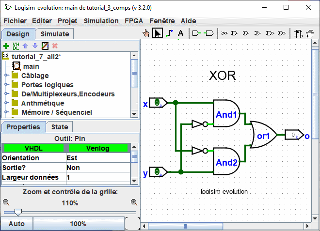
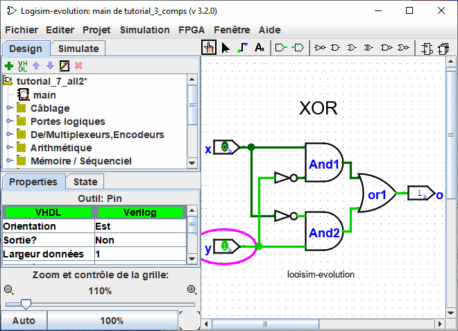

Précédent: Etape 3: Ajouter du texte
Etape 4: Tester votre circuit
La dernière étape consiste à tester notre circuit pour s'assurer qu'il fait effectivement ce que nous en attendons. En fait Logisim simule immédiatement le circuit, au fur et à mesure de son élaboration. Regardons à nouveau ou nous en étions.

Notez que les deux broches d'entrée sont à 0 et qu'il en est de même pour la broche de sortie. Cela nous indique déjà que le circuit calcule un 0 quand les deux entrées sont à 0. Observez aussi la couleur des fils.
Maintenant, essayons une autre combinaison sur nos entrées. Sélectionnez l'outil "Pousser" ( ) et commencez à pousser les entrées en cliquant dessus. Chaque fois que vous poussez une entrée, sa valeur change. Par exemple nous pouvons d'abord pousser l'entrée du bas (y).
) et commencez à pousser les entrées en cliquant dessus. Chaque fois que vous poussez une entrée, sa valeur change. Par exemple nous pouvons d'abord pousser l'entrée du bas (y).

Quand vous changez une valeur d'entrée, Logisim vous indique quelles valeurs voyagent le long des câbles en les colorant en vert clair pour indiquer une valeur à 1 ou en vert foncé (presque noir) pour indiquer une valeur à 0. Vous remarquerez aussi que les sorties des portes AND et OR ont changé à 1.
Jusque là nous avons testé que les deux premières lignes de notre table de vérité, et le résultat (0 xor 1) correspondent aux sorties souhaitées.
| x | y | x XOR y |
|---|---|---|
| 0 | 0 | 0 |
| 1 | 0 | 1 |
| 0 | 1 | 1 |
| 1 | 1 | 0 |
En poussant à nouveau sur les broches dans des configurations différentes, nous pouvons vérifier les deux autres lignes du tableau. Si elles correspondent, alors nous avons réussi: le circuit fonctionne!
Pour compléter votre travail, vous pourriez vouloir imprimer ou enregistrer votre circuit. Le menu | Fichier | vous permet de le faire. En cas d'avarie vous aimeriez certainement observer le fonctionnement de manière plus précise le chapitre suivant va vous l'apprendre.